The following pictures show n unit circles packed inside the smallest known circle (of radius r).
1.
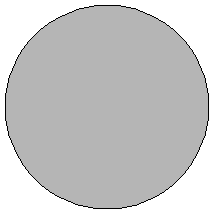
2.
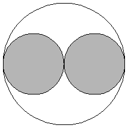
3.
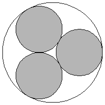
r = 1
Trivial.
r = 2
Trivial.
r = 1 + 2 / √3 = 2.154+
Trivial.
4.
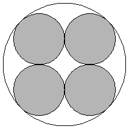
5.
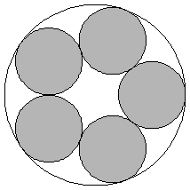
6.
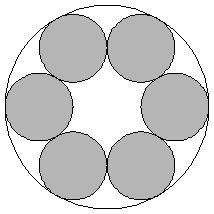
r = 1 + √2 = 2.414+
Trivial.
r = 2.701+
Proved by Graham in 1968.
r = 3
Proved by Graham in 1968.
7.
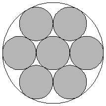
8.
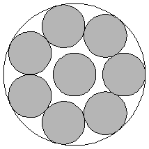
9.
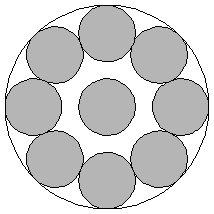
r = 3
Proved by Graham in 1968.
r = 3.304+
Proved by Braaksma in 1963.
r = 3.613+
Proved by Pirl in 1969.
10.
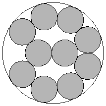
11.
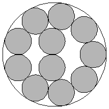
12.
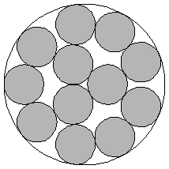
r = 3.813+
Proved by Pirl in 1969.
r = 3.923+
Proved by Melissen in 1994.
r = 4.029+
Found by Kravitz in 1967.
13.
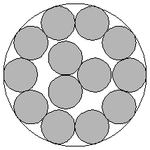
14.
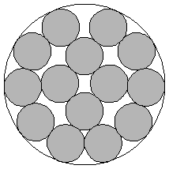
15.
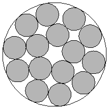
r = 2 + √5 = 4.236+
Proved by F. Fodor in 2003.
r = 4.328+
Found by Goldberg in 1971.
r = 4.521+
Found by Kravitz in 1967.
16.
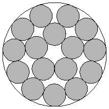
17.
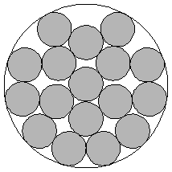
18.
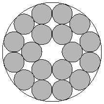
r = 4.615+
Found by Goldberg in 1971.
r = 4.792+
Found by Reis in 1975.
r = 1 + √2 + √6 = 4.863+
Found by Kravitz in 1967.
19.
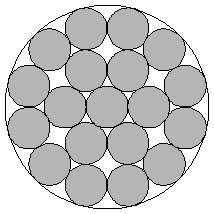
20.
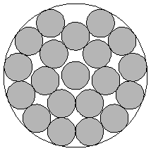
r = 1 + √2 + √6 = 4.863+
Proved by F. Fodor in 1999.
r = 5.122+
Found by Goldberg in 1971.